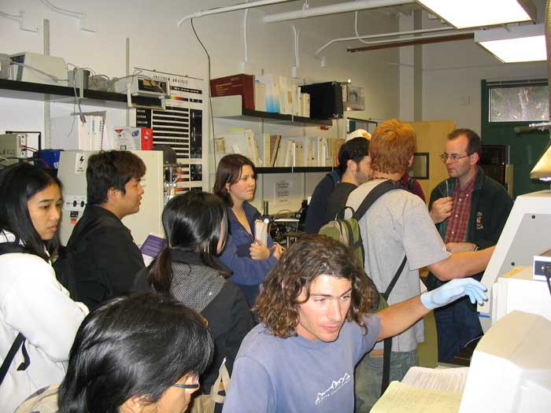
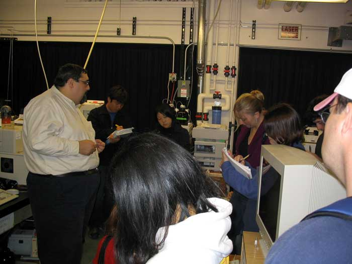

It was drafted in an e-mail sent to the Director of Educational Programs at MRL-UCSB
Date: Tuesday, July 15, 2003
Time: 12 noon to 3:00 pm
This is a group of 25 students taking freshman chemistry at Santa Barbara
City College during the summer session (If successful, and it surely will,
I plan to repeat this activity during the fall semester).
A tentative schedule:
12:00 - 12:40 pm The students gather at MRL Conference Room and a group of
chemist (senior and assistant professors, staff technicians, graduate
students) talk to them for 5- 10 min each about what they do in their daily
lives as chemist working at UCSB. Slides would help.
12:40 - 1:00 pm A brief tour of the MRL facility so that they see that
there is a lot of interesting science going on here.
1:00 - 3:00 pm They will be working in teams of 6 students learning more
directly what x-ray diffraction is in reality, taking a close look at the
diffractometers and running (with the assistance of researchers and staff)
the solid samples they will bring from their labs and demos in class. It
would be very good if they could see the data processing as well (matching
the diffractograms to those of known substances, indexing the peaks
etc.). The data collected should be saved as ASCII files in their floppy
disks. They are expected to turn in a detailed report of the visit and what
they learned here.
I guess I could bring one of the groups to the diffraction laboratory in
the Chemistry dept., one group could go to the diffractometer with Joe
Doyle and other group with Youli Li. There is still one more group to
place. I don't know if Mario Yasa could get that one, I don't think there
are any more powder diffractometers available. Does the Material Dept. have
any? I would appreciate any suggestions of alternative schedules.
Thanks,
The Visit

Doctoral candidate P. Foster explains the use of inductively-coupled plasma atomic emission spectrometer in his research involving novel solid state materials.

Dr. James Pavlovich, manager of the mass spectrometry facility of the Chemistry Department at UCSB shows different aspects of the application of this technique in chemical research.
Dr. John Gomm explains the use of the x-ray diffractometer, where the students will analyze the samples of crystalline solids they prepared in their labs.
Acknowledgment:
Thanks to Cathy Pine and the staff and graduate students at Materials Research Laboratory (a national users' facility founded by the National Science Foundation) and to the staff of the Chemistry Department at UCSB for their help in completing this project.